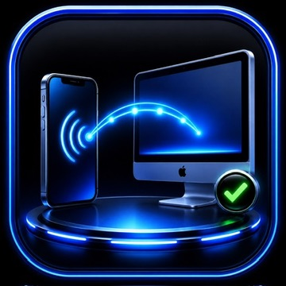
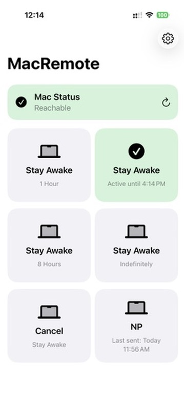

Reachability at a glance
See whether the selected Mac is currently reachable or offline before running a workflow.

Native iPhone App · V1.1
A compact iPhone control panel for checking and running selected workflows on your Mac, with clear feedback from the Mac itself.

MacRemote puts a few important controls and their latest status on one iPhone screen, so you can see whether the Mac responded instead of wondering whether a tap worked.
See whether the selected Mac is currently reachable or offline before running a workflow.
Keep the Mac awake for one, four, or eight hours, indefinitely, or cancel the active request.
See the acknowledged awake state and active expiration when that information is available.
Run the Weekly Visit Notes workflow and see information from its last successful send.
Success and failure cards reflect acknowledgments from the Mac, giving each command a clear result instead of only confirming that a button was tapped.
No private connection details are included in this public presentation.
Designed as a native iPhone app for selected workflows on a configured Mac. The Mac must be available to acknowledge commands and report current state.
More commands are planned. Have an idea? Send a suggestion.
Public distribution is being prepared. This section is ready for an approved App Store, TestFlight, or other download destination when one becomes available.